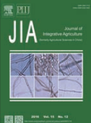
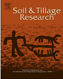
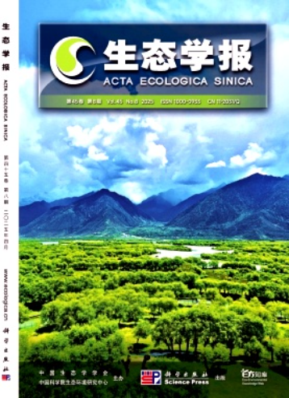

公众号推荐
- 学术类：土壤学报；土壤微生物组；中国环境；环境人environment；宏基因组；生化环材BCEMers；生态学文献分享；生态学家；生信宝典；南农LorMe；农环视界；农业环境科学；农作未来；BioArt植物；天然有机质研究情报；炭索未来；科研菌；水土保持与生态环境治理
- 科研资讯类：顶刊收割机；寇享学术；精鼎统计；科研Z库；微科享；红皇后学术；科学网；知社学术圈
- 工具类：软件智库；管家小e；Figure图；Paper绘图；数据绘图
科研网站
常用软件
- 数据分析：Origin, R语言, SPSS
- 绘图工具：Visio, GraphPad Prism
- 文献管理：Endnote, Zotero
- 地理信息：ArcGIS, QGIS
- 其他工具：Adobe Illustrator, Photoshop
仪器及实验操作
- 实验室常用方法手册 - 点击下载
- TOC仪：总有机碳分析仪操作指南
- 气相色谱仪：GC-2014操作流程
- 其他仪器：元素分析仪、荧光显微镜、PCR仪等
常用期刊

1. Soil Science & Plant Nutrition

2. Geoderma

3. Agriculture Ecosystems & Environment

4. Atmospheric Environment

5. European Journal of Soil Biology

6. Journal of Integrative Agriculture (JIA)

7. Science of the Total Environment

8. Atmospheric Environment

9. Environmental Pollution

10. Journal of Environmental Management

11. Soil & Tillage Research

12. Applied Soil Ecology

13. Environmental Research

14. European Journal of Agronomy

15. Biochar

16. 环境科学 (Huan Jing Ke Xue)

17. 农业环境科学学报 (Journal of Agro-Environment Science)

18. 生态学报 (Acta Ecological Sinica)

19. 土壤通报 (Chinese Journal of Soil Science)

20. 农业工程学报 (Transactions of the Chinese Society of Agricultural Engineering)